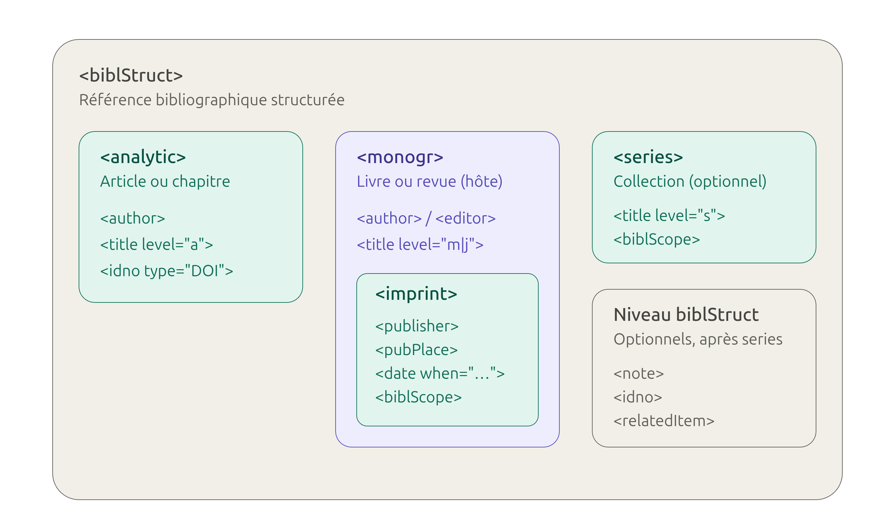
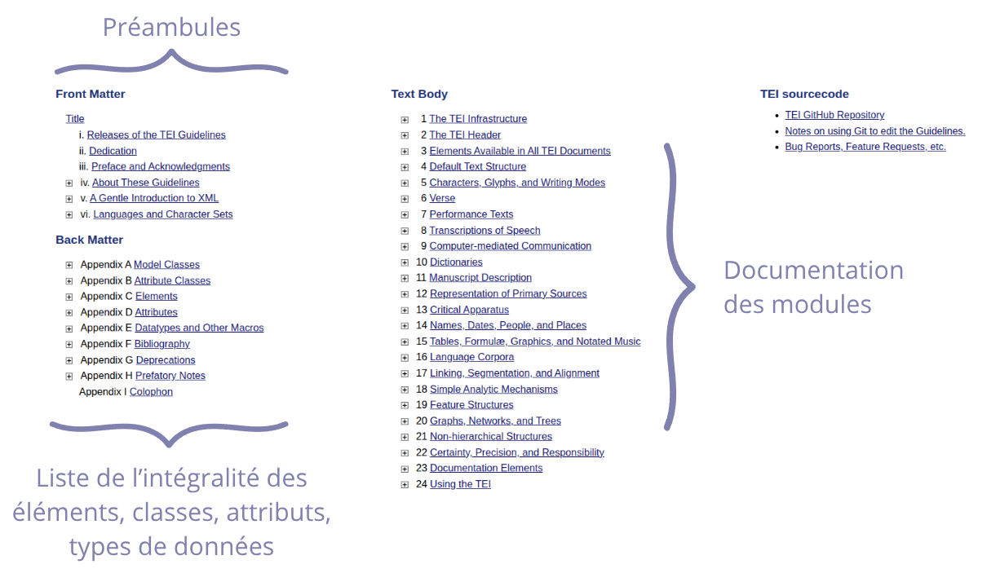
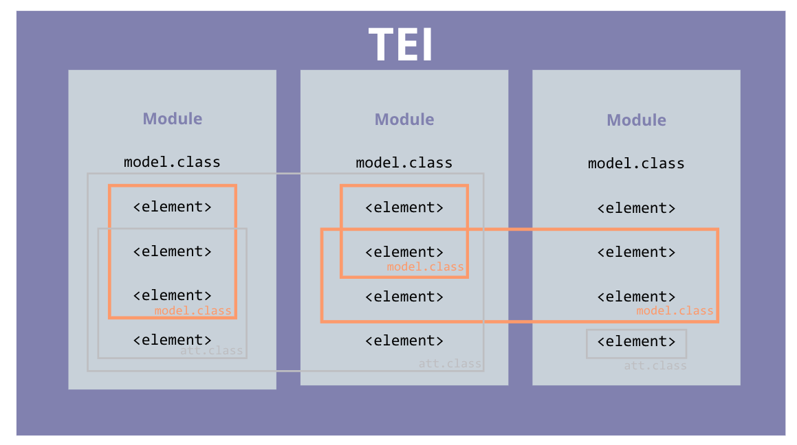
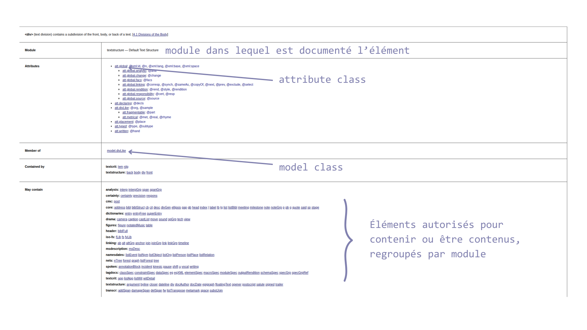

Atelier 3
Partie 1 : édition paléographique (suite), TEI pour la description des sources manuscrites
Introduction
Après avoir encodé le texte d’un manuscrit (lignes, zones, graphies, abréviations), il faut décrire le manuscrit lui-même : où il est conservé, ce qu’il contient, de quand il date, d’où il vient. Cette description est indispensable pour situer l’édition et permettre aux chercheurs de retrouver et d’identifier la source.
Deux approches :
- XML-EAD (Encoded Archival Description) : standard des archives et des bibliothèques pour décrire des fonds et des collections. Il privilégie une description hiérarchique (fonds, séries, pièces) à des fins d’inventaire et de recherche documentaire.
Mais le standard présente des limites :
La nécessité d’une arborescence est moindre pour ces documents que pour des ensembles d’archives, et la sémantique EAD n’est pas aussi développée que celle de la TEI-P5, utilisée pour les manuscrits médiévaux dans plusieurs pays d’Europe. “Informatiser des descriptions complexes : l’utilisation de l’EAD et de la TEI pour les manuscrits et les livres anciens en France”, IFLA 2012 (Helsinki)
- TEI (module manuscript description) : extension de la TEI qui convient mieux à l’étude savante d’un objet particulier (contenu, support, écriture, histoire) et permet d’avoir ces informations dans le même fichier que l’édition du texte.
<msdDesc>, l’élément englobant
L’élément msDesc se trouve dans le sourceDesc. Il contient :
<msIdentifier>Identification du manuscrit (cote, lieu de conservation, etc.). Seul élément obligatoire<msContent>Détails sur le contenu intellectuel du manuscrit<physDesc>Description de la matérialité du manuscrit<history>Renseignements sur la provenance et l’histoire de la transmission du manuscrit
<msdIndentifier>
- Contient les informations pour une identification non ambigüe du manuscrit
- Premier élément (et seul obligatoire) du msDesc
Quelques éléments du <msIdentifier>
<idno>Identifiant du manuscrit (cote généralement)<repository>Instance de conservation<msName>Titre du manuscrit<altIdentifier>Autre identifiant (ancienne cote ou id numérique)
Le <head> (facultatif : à mettre au même niveau que le <msIdentifier>). Contient tout type d’en-tête concernant le manuscrit à décrire, il est courant d’y voir figurer le titre (<title>) et la date (<origDate>) de l’ouvrage. Il est utilisé davantage pour l’intitulé du manuscrit que pour son identification univoque.
<msIdentifier>
[...]
</msIdentifier>
<head>
[...]
</head>Décrire les contenus : <msContents>, <msPart>, <msFrag>
Ces éléments appartiennent à <msDesc> (description de manuscrit, dans <sourceDesc>). Ils permettent de décrire le contenu d’un manuscrit et de gérer les cas où celui-ci n’est pas une unité simple.
<msContents>
Décrit le contenu intellectuel du manuscrit ou d’une partie du manuscrit, soit en une série de paragraphes <p> contenant de la prose courante, soit sous une forme plus structurée, comprenant plusieurs <msItem> pour les différentes parties du manuscrit.
Ses principaux éléments enfants sont :
<summary>Résumé global du contenu du manuscrit, possiblement structuré en table des matières indiquant avec locus les différentes parties ⇒ Utile pour détailler l’ensemble du manuscrit<msItem>Permet de décrire une partie du manuscrit constituant une unité cohérente de contenu. Les items peuvent être imbriqués (noter l’existence de<msItemStruct>)<titlePage>Description du contenu de la page de titre (rappelez-vous, on a déjà décrit la page de titre du Cid dans un<front>)
summary
<msContents>
<summary>
<locus from="1r" to="2v">
Première partie du manuscrit
</locus>
<locus from="3r" to="18v">
Seconde partie du manuscrit
</locus>
</summary>
</msContents>msItem
Il décrit un regroupement de textes contenus dans le manuscrit. Chaque œuvre ou section est décrite soit par du texte libre dans des <p>, soit par un <msItem> (avec @n pour l’ordre), contenant par exemple <locus> (folios), <author>, <title>, <incipit>, <explicit>, <textLang>.
<msDesc>
<msIdentifier>
<settlement>Valenciennes</settlement>
<repository>Bibliothèque municipale</repository>
<idno>Ms. 150</idno>
</msIdentifier>
<msContents>
<msItem n="1">
<locus from="141r" to="141v">ff. 141r-141v</locus>
<title>Séquence de sainte Eulalie</title>
<textLang mainLang="fro">Ancien français</textLang>
</msItem>
<msItem n="2">
<locus>f. 141v</locus>
<title>Ludwigslied</title>
<textLang mainLang="goh">Vieux haut allemand</textLang>
</msItem>
</msContents>
</msDesc><msItem> peut être imbriqué (par exemple pour un recueil contenant des sections, elles-mêmes divisées en textes).
<msPart> : un manuscrit composite
Un manuscrit est parfois formé de plusieurs unités d’origine différente, reliées ensemble après coup (recueil factice). Chaque partie a sa propre description : identifiant, contenu, support, date, origine.
<msDesc>
<msIdentifier>…</msIdentifier>
<msPart>
<msIdentifier><idno>Partie A</idno></msIdentifier>
<msContents>
<msItem><title>Texte latin</title></msItem>
</msContents>
<history><origin><origDate>IXe s.</origDate></origin></history>
</msPart>
<msPart>
<msIdentifier><idno>Partie B</idno></msIdentifier>
<msContents>
<msItem><title>Texte en langue romane</title></msItem>
</msContents>
<history><origin><origDate>XIe s.</origDate></origin></history>
</msPart>
</msDesc><msFrag> : un manuscrit fragmentaire
Il décrit les fragments dispersés d’un même manuscrit d’origine, aujourd’hui conservés séparément (parfois dans des bibliothèques différentes). Sa structure est la même que celle de <msPart>.
<msDesc>
<msIdentifier>
<msName>Évangéliaire de l'abbaye X (reconstitué)</msName>
</msIdentifier>
<msFrag>
<msIdentifier>
<settlement>Paris</settlement>
<repository>BnF</repository>
<idno>Fragment 1</idno>
</msIdentifier>
<msContents><msItem><title>Évangile de Matthieu</title></msItem></msContents>
</msFrag>
<msFrag>
<msIdentifier>
<settlement>Lyon</settlement>
<repository>Bibliothèque municipale</repository>
<idno>Fragment 2</idno>
</msIdentifier>
<msContents><msItem><title>Évangile de Marc</title></msItem></msContents>
</msFrag>
</msDesc>Récap
| Élément | Emploi |
|---|---|
<msContents> |
décrit les textes d’un manuscrit (via <msItem>) |
<msPart> |
parties d’origine distincte réunies dans un même volume |
<msFrag> |
fragments dispersés d’un même manuscrit d’origine |
Attention : <msPart> et <msFrag> ne se combinent pas avec <msContents>.
Description matérielle du document : le <physDesc>
Le physDesc contient la description physique partielle ou complète du manuscrit, éventuellement structurée en utilisant des éléments spécialisés.
Ses principaux éléments enfants sont :
<objectDesc>Description globale de l’objet en cours de description (dimension, type de support, etc.)<handDesc>Description des mains intervenants dans le manuscrit<decoDesc>Description des éléments décoratifs, notamment des enluminures<bindingDesc>Description de la reliure et éventuellement ses précédentes reliures
Histoire et transmission du manuscrit : le <history>
Rassemble les éléments servant à donner un historique partiel ou complet du manuscrit, notamment à travers des informations sur son parcours depuis sa création.
Ses principaux éléments enfants sont :
<origin>Information sur le contexte et les circonstances de création du manuscrit<provenance>Information sur un épisode précis du manuscrit, entre sa création et son acquisition<acquisition>Information sur les circonstances de l’entrée du manuscrit dans l’institution qui le détient
<history>
<origin>[…]</origin>
<provenance>[…]</provenance>
<acquisition>[…]</acquisition>
</history>L’élément <provenance> peut contenir des références bibliographiques plus ou moins structurées.
Structurer un <biblStruct>
<biblStruct> décrit une référence bibliographique de façon structurée. Il se place généralement dans <sourceDesc> ou dans une <listBibl>. En l’occurence, pour nos descriptions de manuscrit, on peut insérer une <listBibl> dans l’élément <provenance> pour sourcer l’histoire du manuscrit.
Les trois niveaux
| Niveau | Contenu | Exemple |
|---|---|---|
<analytic> |
partie d’un ensemble (article, chapitre) | l’article lui-même |
<monogr> |
publication qui contient l’élément, ou livre complet | le livre, la revue |
<series> |
collection dans laquelle paraît la publication | « Bibliothèque de l’École des chartes » |
On insère des informations dans chacun des niveaux. Les trois niveaux peuvent avoir un élément <title>, qui prend alors un attribut @level dont la valeur peut être : a (analytique : article, chapitre), m (monographie), j (revue), s (collection).
L’ordre des éléments est fixe <analytic> → <monogr> → <series> (plus plus profond au plus englobant). <monogr> contient un élément <imprint> qui contient la plupart des informations concernant la monographie ou le numéro de revue, par exemple <biblScope> pour situer la partie dans le tout.

<biblstruct>Pour un livre
Pour citer une monographie dans son entièreté, pas besoin d’<analytic>
<biblStruct>
<monogr>
<author>
<persName><surname>Zink</surname>, <forename>Michel</forename></persName>
</author>
<title level="m">Introduction à la littérature française du Moyen Âge</title>
<imprint>
<pubPlace>Paris</pubPlace>
<publisher>Le Livre de Poche</publisher>
<date when="1993">1993</date>
</imprint>
</monogr>
<series>
<title level="s">Références</title>
</series>
</biblStruct>Pour un article de revue
L’<analytic> décrit l’article, le <monogr> décrit la revue qui le contient.
<biblStruct>
<analytic>
<author>
<persName>
<surname>Cerquiglini</surname>,
<forename>Bernard</forename>
</persName>
</author>
<title level="a">Éloge de la variante</title>
</analytic>
<monogr>
<title level="j">Langue française</title>
<imprint>
<biblScope unit="volume">40</biblScope>
<biblScope unit="page" from="25" to="40">p. 25-40</biblScope>
<date when="1983">1983</date>
</imprint>
</monogr>
</biblStruct>Pour un chapitre dans un ouvrage collectif
<biblStruct>
<analytic>
<author><persName><surname>Dupont</surname></persName></author>
<title level="a">Le manuscrit de Valenciennes</title>
</analytic>
<monogr>
<editor><persName><surname>Martin</surname></persName></editor>
<title level="m">Les premiers textes romans</title>
<imprint>
<pubPlace>Lyon</pubPlace>
<publisher>Presses universitaires</publisher>
<date when="2005">2005</date>
</imprint>
</monogr>
</biblStruct>Règles à retenir
<analytic>est facultatif : il n’apparaît que pour un article ou un chapitre.<monogr>est obligatoire : il décrit toujours la publication « hôte ».- L’ordre est fixe :
<analytic>, puis<monogr>, puis<series>. <imprint>(lieu, éditeur, date) et son enfant<biblScope>(volume, pages) se placent dans<monogr>.- Les auteurs sont dans
<analytic>pour un article, dans<monogr>pour un livre. - Pour retrouver une référence dans le texte, on peut lui donner un
@xml:idet la citer avec<ref target="#zink1993">.
Partie 2 : s’autonomiser avec la TEI
Un exemple de workflow avec la TEI
- analyse documentaire, qui consiste à déterminer la structure hiérarchique des documents
- Commencer à concevoir un schéma c’est-à-dire une grammaire formelle définissant les emplacements autorisés et interdits pour les différents éléments et attributs qu’on souhaite utiliser
- Commencer à baliser le document en respectant ce schéma et à le valider, c’est-à-dire vérifier que le balisage utilisé est strictement conforme aux règles établies par le schéma.
- Se rendre compte que le texte butte sur le schéma
- Modifier le schéma (plus ou moins contraignant)
- Quand on a changé le schéma il faut souvent ajuster le balisage en fonction.
Se repérer dans les guidelines
Les Guidelines de la TEI sont la documentation officielle. Elles constituent un guide de bonnes pratiques établi de manière itérative au fil des projets d’encodage. Elles décrivent plusieurs centaines d’éléments, sur plusieurs centaines de pages. Personne ne les lit de bout en bout. Il faut apprendre à naviguer dedans selon son besoin.
Les Guidelines sont elles-mêmes écrites en TEI !

Je vous propose quelques entrées :
1. Les exemples
C’est un bon point de départ, chaque élément en propose plusieurs, plus ou moins complexe. Et quand on regarde les exemples des éléments les plus englobants, on a bien les structures imbriquées attendues.
2. Les modules
La TEI est découpée en modules, chacun correspondant à un type de contenu ou un geste éditorial.
Chaque module :
- est documenté par un chapitre des Guidelines
- définit un certain nombre de composantes (éléments, classes, macros)
- correspond à une problématique particulière
- hormis les 4 obligatoires, il peut être inclu ou exclu d’une personnalisation (ou schéma)
Pour rappel, les quatre modules obligatoires sont tei, core, header et textstructure.
tei: infrastructure (classes, macros, datatypes)core: éléments communs (<p>,<hi>,<note>,<quote>,<list>,<ref>, etc.)header: l’en-tête<teiHeader>textstructure: structure de base des textes (<text>,<body>,<div>,<front>,<back>)
Il existe des modules spécialisés par type de texte :
verse: poésie et versification (<l>,<lg>)drama: théâtre (<sp>,<speaker>,<stage>)spoken: transcription de l’oral (<u>,<pause>,<vocal>)dictionaries: dictionnaires et lexiques (<entry>,<form>,<sense>)
Des modules pour les sources et l’édition savante :
transcr: transcription de manuscrits (<surface>,<zone>,<facsimile>,<damage>)msdescription: description de manuscrits (<msDesc>,<msIdentifier>,<physDesc>)textcrit: apparat critique (<app>,<lem>,<rdg>,<witness>)gaiji: caractères et glyphes non standard (<char>,<glyph>)
Des modules d’analyse et d’annotation :
analysis: analyse linguistique (<w>,<pc>,<s>,<cl>)linking: liens et alignements (<link>,<ab>,<join>)certainty: incertitude et imprécision (<certainty>,<precision>)namesdates: noms, lieux, personnes, dates (<persName>,<placeName>,<person>,<place>,<org>)
Autres modules :
figures: tableaux, formules, figures (<table>,<figure>,<formula>)nets: graphes, arbres, réseaux (<graph>,<node>,<arc>)iso-fs: structures de traits (<fs>,<f>)tagdocs: documentation du balisage lui-même (<elementSpec>,<specList>), utilisé pour les fichiers ODD
3. Les éléments
Les Guidelines mettent à disposition une fiche de référence par élément. On y trouve
- sa définition et le module auquel elle appartient
- ses attributs
- son contenant (« Contained by ») : dans quels éléments elle peut apparaître
- son contenu (« May contain ») : quels éléments elle peut renfermer
- son modèle de contenu formel => on y vient
4. Les classes
C’est l’entrée la plus technique.

Les classes sont un autre moyen de regrouper les composant, transversalement aux modules.
Elles sont définies dans un module mais peuvent porter sur des éléments d’un autre. Les éléments héritent des propriétés de la classe à laquelle ils appartiennent.
- les classes de modèle (
model.*) regroupent des éléments qui jouent un rôle équivalent, par exemplemodel.pPart.datapour les noms, dates, lieux ; ce sont des éléments qu’on va retrouver plus ou moins aux mêmes endroits des documents, quel que soit le type de document. - les classes d’attributs (
att.*) regroupe les éléments selon des attributs partagés.
att.class
Par exemple un élément appartient à la classe att.global s’il admet des attributs qui peuvent être utilisés avec n’importe quel élément de la TEI. Ce sont les attributs de base : @xml:id pour identifier un élément, @n pour le numéroter, @rend pour décrire sa mise en forme, @xml:lang pour indiquer sa langue.
Un élément appartient à la classe att.linking s’il admet des attributs qui permettent de lier des éléments entre eux, qu’ils soient proches ou éloignés dans le document : @corresp pour une correspondance, @next et @prev pour enchaîner des fragments, @sameAs pour indiquer que deux éléments désignent la même chose.
Un élément appartient à la classe att.ascribed s’il admet des attributs qui permettent d’attribuer un discours ou une action à un individu précis : c’est le rôle de @who, qui pointe vers l’identifiant de la personne concernée.
Donc quand on tombe sur une balise, on n’a pas la liste de ses attributs mais on se demande « à quelles classes d’attributs appartient-elle ? » pour savoir les ensembles d’attributs qu’elle admet.
Quelques attributs à retenir :
- Attributs globaux (toujours disponibles)
@nfournit un numéro ou un label (pas unique)@rendpour préciser un certain rendu graphique de l’élément dans la source ou la sortiexml:idfournit un identifiant unique à l’élement qui porte l’attributxml:langindique la langue du contenu textuel de l’élément (code langue ISO)
- Attributs fréquemment employés
@typepour typer un élément@targetlien interne@refréférence@keyréférence canonique
model.class
Le regroupement en classes de modèle définit des ensembles de balises selon là où ils peuvent apparaître : par exemple la classe model.divPart regroupe les éléments qui peuvent être contenu par une div. OU selon un point commun sémantique : par exemple la classe model.nameLike qui regroupe sémantiquement les éléments qui servent à encoder les différents types de nom : prénom, nom de famille, surnom, particule, etc.
Les macros
Les macros définissent des raccourcis pour désigner les valeurs attendues au sein des éléments/attributs.
- types de contenus standardisés (par exemple macro.paraContent) ;
- valeurs autorisées (par exemple data.count).
Elles sont utilisées dans les modèles de contenu pour faire référence à des séquences rencontrées dans des éléments.
Qu’est-ce que c’est le modèle de contenu ?
Chaque élément de la TEI obéit à un modèle de contenu : une règle qui définit ce qu’il a le droit de contenir, dans quel ordre et combien de fois. C’est ce que vérifie Oxygen quand il souligne une balise en rouge. Le modèle se lit dans la fiche de l’élément, à la rubrique « Content model ».
Un modèle de contenu peut être défini directement dans un élément, ou délégué à une macro, c’est-à-dire un modèle nommé et réutilisable par plusieurs éléments.
Exemple
<content>
<alternate minOccurs="0" maxOccurs="unbounded">
<textNode/>
<classRef key="model.limitedPhrase"/>
<classRef key="model.inter"/>
</alternate>
</content><content>: on entre dans la définition du modèle de contenu.<alternate>: on fait choisit parmi les choix suivant, dans l’ordre qu’on veut…minOccurs="0" maxOccurs="unbounded": ce choix peut ne jamais apparaître (contenu vide) ou se répéter autant de fois que l’on veut. L’ordre est donc libre.<textNode/>: du texte brut est autorisé.<classRef key="model.limitedPhrase"/>: tout élément de la classemodel.limitedPhraseest autorisé. Cette classe regroupe des éléments de niveau « mot » ou « expression » (par exemple<persName>,<placeName>,<date>,<foreign>), donc elle exclut une partie des éléments demodel.phrase.<classRef key="model.inter"/>: tout élément de la classemodel.interest autorisé. Ce sont des éléments qui peuvent apparaître à l’intérieur comme entre des blocs de texte (listes, citations, notes, etc.).
Traduction : La macro.limitedContent déscrit du texte, mélangé librement avec des expressions plus petites que des phrases et des éléments dits intermédiaires comme des citations ou des notes, dans n’importe quel ordre et en nombre quelconque.
<content>
<macroRef key="macro.limitedContent"/>
</content><content>: modèle de contenu de l’élément<desc>.<macroRef key="macro.limitedContent"/>: renvoie à la macro. Son contenu est donc exactement celui qu’on vient de lire.
Traduction : <desc> accepte le même contenu que macro.limitedContent.
Exemple valide :
<desc>Note tironienne pour <foreign xml:lang="la">et</foreign>, abréviation courante.</desc>Le texte et <foreign> (de la classe model.limitedPhrase) sont mélangés librement.
Exemple invalide :
<desc><p>Note tironienne.</p></desc><p> n’appartient ni à model.limitedPhrase ni à model.inter : Oxygen signalera une erreur.
Récap
Donc un élément est défini en regard des autres composants : modules, classes, macro…

Maîtriser les espaces de noms
Principe
Si XML c’est la langue, l’espace de nom ce serait le lexique. C’est une propriété d’appartenance des éléments. Et ce lexique est associé à une utilisation particulière (on parle d’une application XML) et à une URI unique.
Certains documents combinent des balises issues de plusieurs applications XML, donc qui appartiennent à plusieurs espaces de nom. Par exemple, un document XHTML peut contenir à la fois des images SVG et des équations MathML. Une feuille de style XSLT contiendra à la fois des instructions XSLT et des éléments issus du vocabulaire de l’arbre de résultat.
On a donc créé une technologie particulière, exprimée dans une syntaxe déclarative, pour gérer différents vocabulaires XML au sein d’un même projet.
Cela a deux fonctions :
- Distinguer les éléments et attributs qui viennent de vocabulaires différents, dans lesquels ils ont des significations et des emplois différents, même s’ils partagent le même nom.
Par exemple j’ai un projet dans lequel j’utilise deux schémas, l’un comporte des éléments pour représenter une bibliographie, et l’autre des éléments pour représenter des personnes. Les deux peuvent comprendre un élément <title>, mais une fois pour désigner les titres de livre et une autre fois pour encoder un titre de noblesse. Pour garder du sémantique il faut pouvoir distinguer les deux.
Autre exemple, cette fois plus concret : l’élément <set> exsite en SVG et en MathML.
- La seconde fonction est de permettre à un logiciel, à la machine, de traiter cette information.
Implémentation
On attache un préfixe aux éléments et aux attribut. Par exemple : tei:persName est le QName ou raw name de l’élément <persName> de la TEI.
Chaque préfix est mappé à une URI par un attribut placée dans la balise racine @xmlns:prefix. Exemple :
<TEI xmlns="http://www.tei-c.org/ns/1.0"
xmlns:xs="http://www.w3.org/2001/XMLSchema"
xmlns:m="http://www.w3.org/1998/Math/MathML"
xmlns:sch="http://purl.oclc.org/dsdl/schematron"
xmlns:xi="http://www.w3.org/2001/XInclude"
xmlns:rng="http://relaxng.org/ns/structure/1.0">Le préfixe est déclaré au niveau de l’élément racine (si les différents éléments sont répartis dans tout le document) ou dans l’élément qui va contenir les éléments concernés par la déclaration.
Dans l’exemple ci-dessus on peut voir :
- Un namespace déclaré par défaut : tous les éléments non préfixés appartiennent à cet espace de nom. Tous les éléments non préfixés sont considérés comme appartenant à l’espace de nom
tei:. - 5 préfixes sont déclarés, pour utiliser les éléments des namespaces correspondants de manière ponctuelle dans le document. Par exemple si je veux écrire une formule mathématique je peux écrire :
<m:math>
<m:msup>
<mi>x</mi>
<m:mn>2</m:mn>
</m:msup>
</m:math>Les URI d’espace de noms ne renvoient pas nécessairement vers un document ou une page existante. En fait, ils ne sont pas tenus d’utiliser le protocole HTTP. Ils peuvent même employer un autre protocole, comme mailto. Les URI d’espaces de noms sont des identifiants purement formels.
Attention point terminologique : différence entre URI / URL / URN
URI ⊃ URL et URN.
URI(Uniform Resource Identifier) : une séquence de caractères unique qui identifie une ressource. Toutes les URIs sont soit des URLs soit des URNs.URL(Uniform Resource Locator) : un type spécifique d’URI qui non seulement identifie la ressource, mais dit où elle est localisée au sein d’un réseau, et comment y accéder, via un protocole (comme https:// ou ftp://)URN(Uniform Resource Name) : un type spécifique d’URI qui identifie une ressource grâce à un nom pérenne, sans dire où elle est située ou comment y accéder. C’est le cas des ISBN par exemple.
Voici un autre exemple de déclaration des préfixes dans l’élément englobant :
<svg xmlns="http://www.w3.org/2000/svg"
width="12cm" height="10cm">
<ellipse rx="110" ry="130"/>
<rect x="4cm" y="1cm" width="3cm" height="6cm"/>
</svg>Ici, même si aucun des éléments ne porte de préfixe, les éléments svg, ellipse et rect appartiennent à l’espace de nom svg. C’est le nouvel espace de nom par défaut à l’intérieur de l’élément englobant <svg>.
La situation est différente pour les attributs : les espaces de noms par défaut ne s’appliquent qu’aux éléments, et non aux attributs. Donc les attributs n’héritent pas d’un namespace par défaut. Ainsi, dans l’exemple précédent, les attributs width, height, rx, ry, x et y n’appartiennent à aucun espace de noms. Mais un attribut est toujours attaché à un élément précis. Donc il n’y a jamais d’ambiguïté : l’attribut appartient forcément à son élément porteur.
La seule façon pour un attribut d’appartenir à un namespace est d’avoir un préfixe déclaré, comme xlink:type ou xlink:href dans : <p xlink:type="simple" xlink:href="ellipses.html">. Ici, xlink:type et xlink:href sont bien dans le namespace XLink, parce qu’ils sont préfixés, et ils n’héritent pas du namespace de leur élément porteur.
À retenir :
- Déclarer un espace de nom par défaut dans l’élément englobant, ainsi que les préfixes des autres namespaces.
- L’espace de nom par défaut ne s’applique pas aux éléments et aux attributs préfixés. Ces derniers appartiennent toujours à l’espace de nom duquel ils sont préfixés, et à condition que ce dernier soit déclaré.
Références et ressources
BURGHART, Marjorie, Éditer des sources historiques en ligne grâce à XML – Un guide pratique
BURGHART, Marjorie, PIERAZZO, Elena et al., Online course: Digital Scholarly Editions: Manuscripts, Texts, and TEI Encoding – Digital Editing of Medieval Manuscripts